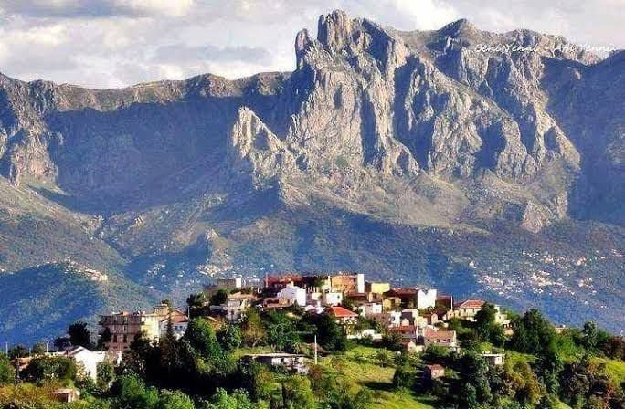

Paroles de pierres
Ô Djurdjura !
Trône des hauteurs,
Toit invincible qui dialogue avec le ciel !
Depuis l’aube des temps,
Tu te dresses,
Colonne de pierre,
Temple de lumière,
Gardien silencieux des peuples et des siècles.
Montagne des libres,
Trône des vents,
Autel des ancêtres,
Nous t’invoquons !
Je suis l’épine dorsale de la terre,
Un colosse sculpté par le temps.
Mes sommets touchent le ciel,
Mes racines plongent dans l’éternité.
Je suis la montagne qui parle,
L’ancêtre immobile aux épaules de pierre.
Depuis l’aube des temps,
Je veille,
J’écoute,
Je transmets.
Ô Djurdjura !
Toi qui parles dans le tonnerre,
Toi qui chantes dans les sources,
Toi qui respires dans les forêts,
Nous t’écoutons !
Je suis
La beauté,
La simplicité,
La confiance,
La gentillesse.
Ô Djurdjura,
Tu es la beauté des aubes pures,
Quand la neige dore ton front de gloire,
Quand les vents enroulent autour de toi
Leurs hymnes clairs comme des prières.
Tu es la beauté immuable,
Neige éclatante, ciel sans fin,
Flamme d’or au couchant.
Nous te bénissons !
Je suis la beauté farouche,
La blancheur éclatante des neiges d’hiver,
Le vert profond des forêts millénaires,
L’or flamboyant des couchers de soleil.
Je suis la beauté,
Quand l’aube caresse mes sommets
Et que la neige s’accroche à mes épaules.
Je suis la beauté,
Mais une beauté qui ne se fane pas :
Celle des pics éternels,
Des neiges qui renaissent chaque hiver,
Des forêts qui murmurent des prières anciennes.
Ô Djurdjura,
Tu es la simplicité des sources,
L’eau limpide qui jaillit du roc,
Le pain partagé sous l’olivier,
Le chant humble qui s’élève
Dans les vallées parfumées de thym.
Tu es la simplicité des vivants,
Le pain rompu,
L’eau partagée,
La voix des bergers qui s’élève au matin.
Nous t’honorons !
Je suis la simplicité,
Un chant pur qui s’élève des bergers,
Un rire d’enfant au creux d’un village,
Le parfum du pain cuit sur la pierre.
Je suis la simplicité,
Celle des sources claires
Qui désaltèrent les voyageurs fatigués.
Je suis la simplicité,
Celle du pain chaud partagé,
Du chant qui s’élève sans artifice,
De la vie qui s’accroche aux pentes abruptes.
Ô Djurdjura,
Tu es la confiance des hommes libres,
L’ancre où s’attache l’espérance,
Le roc qui ne cède pas aux orages,
La citadelle qui enseigne la dignité.
Tu es la confiance des siècles,
Le roc debout contre la tempête,
L’écho qui répète : « Tenez bon ! »
Nous te suivons !
Je suis la confiance,
Car je ne plie pas,
Car je demeure immobile
Quand tout s’écroule autour de moi.
Je suis le roc où s’ancre l’espérance.
Je suis la confiance,
Car depuis des siècles
Mes roches veillent sur les villages
Comme des gardiennes silencieuses.
Je suis la confiance,
Car jamais je ne me courbe.
Même face aux tempêtes,
Je demeure debout,
Et dans mes racines,
Vos espoirs trouvent refuge.
Ô Djurdjura,
Tu es la bonté des mères,
Le sein nourricier des terres fertiles,
L’abri des troupeaux,
La tendresse tissée dans les foyers
Où brûle la braise de l’hospitalité.
Tu es la gentillesse des mères,
La chaleur des foyers,
La main ouverte,
Le sourire gravé dans la pierre du temps.
Nous t’aimons !
Je suis la gentillesse,
La chaleur des foyers,
La main ouverte au passant,
L’écho tendre d’une berceuse
Qui se perd entre mes vallées.
Je suis la gentillesse,
Celle qui habite les cœurs
De ceux qui m’habitent,
Le sourire offert avec le pain,
La main tendue avant les mots.
Je suis la gentillesse,
La mère qui berce ses enfants
Dans le creux de ses vallées,
Qui abreuve ses troupeaux,
Qui parfume vos nuits de jasmin et de thym.
Ô Djurdjura,
Tu es culture et mémoire,
Parole immortelle transmise aux enfants,
Parchemin vivant écrit dans la pierre,
Flamme qui danse au rythme du tambour,
Lumière qui refuse l’oubli.
Tu es culture,
Tu es mémoire,
Flamme jamais éteinte,
Chant qui franchit l’oubli,
Parole qui défie la nuit.
Nous te chantons !
Je suis la culture,
Je suis la mémoire,
Je suis la langue qui ne meurt pas,
Je suis la danse du feu,
Je suis le battement du tambour,
Je suis la couleur qui résiste au temps.
Je suis mémoire et culture,
Racines profondes,
Chants anciens et vivants.
Je suis culture,
Dans chaque poème transmis par la voix,
Dans chaque pas de danse,
Dans chaque tissage coloré
Où la mémoire se brode.
Je suis culture,
Mémoire taillée dans la pierre,
Parole transmise de bouche en bouche,
Flamme que rien n’éteint.
Mes chants traversent le temps,
Mes danses défient l’oubli,
Mes couleurs habitent vos mains.
Ô Djurdjura,
Tu es la terre et les montagnes,
L’épreuve qui trempe les âmes,
La grandeur qui sculpte les peuples.
Sous ton ombre s’est forgée
La fierté des Amazighs.
Ô Djurdjura,
Tu es Amazigh !
Indomptable,
Inviolé,
Éternel !
Dans ton souffle gronde la liberté,
Dans tes entrailles brûle la dignité.
Et tant que tes cimes toucheront le ciel,
Tant que ton ombre bercera la terre,
Nous serons tes enfants,
Fiers et debout comme toi.
Nous te jurons fidélité !
Je suis la terre,
Je suis les montagnes,
Je suis Amazigh.
Je suis le fier Djurdjura.
Je suis la terre et les montagnes,
Le souffle qui forge les hommes,
L’âpreté qui trempe le courage,
La splendeur qui élève les âmes.
Je suis la terre et les montagnes,
Le souffle du vent libre,
Le parfum du cèdre et du thym.
Je suis la terre et les montagnes,
La force qui vous a façonnés,
Le souffle qui vous a appris
La liberté,
L’endurance,
La fierté.
Je suis Amazigh,
Indomptable, libre, immortel.
Dans mes entrailles brûle
La flamme de vos ancêtres,
Dans mes hauteurs résonne
Le cri de votre dignité.
Je suis Amazigh,
Dans mon âme rebelle,
Dans mes chants de résistance,
Dans mes pierres qui parlent encore
De liberté et d’honneur.
Je suis Amazigh,
Indomptable et fidèle,
Une racine qui plonge au plus profond de l’Histoire
Et qui jamais ne se brise.
Ô Djurdjura,
Montagne des libres !
Dans tes entrailles dort le feu des ancêtres,
Dans ton souffle s’élève la voix de l’éternité.
Et tant que tes cimes toucheront le ciel,
Nul ne pourra éteindre la dignité
De ceux qui portent ton nom.
Ô Djurdjura !
Montagne des libres,
Trône des vents,
Autel des ancêtres,
À jamais,
Nous t’appartenons.
Je suis le fier Djurdjura,
Trône des vents, sanctuaire des dieux,
Gardien des siècles et des hommes.
Et tant que je m’élèverai vers le ciel,
Vous porterez en vous
L’écho de ma grandeur.
Je suis le fier Djurdjura,
Éternel et immobile,
Mais vivant dans chaque battement de ceux
Qui n’oublient pas leur racine.
Je suis le fier Djurdjura,
Votre refuge et votre témoin.
Et tant que mes roches tiendront debout,
Vous ne serez jamais seuls.
Djamel Metref
At Yenni le 24 septembre 2025

← Tous les poèmes